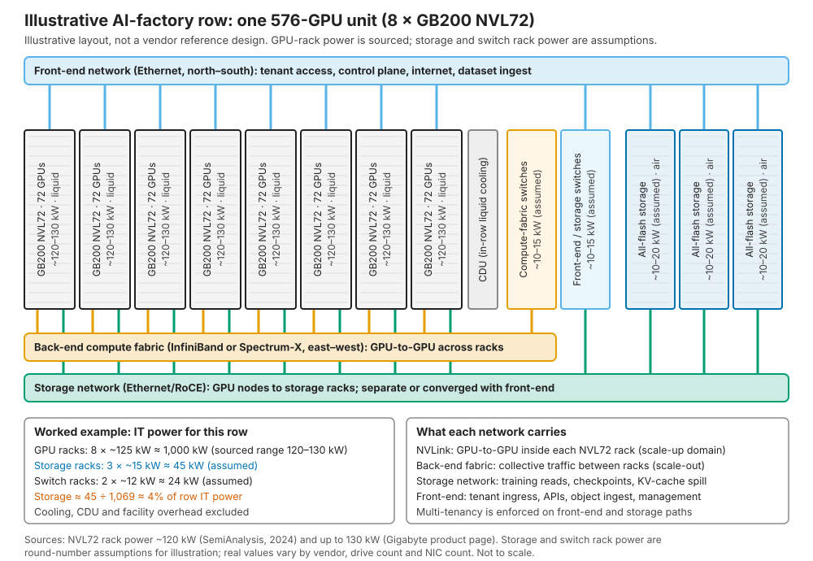
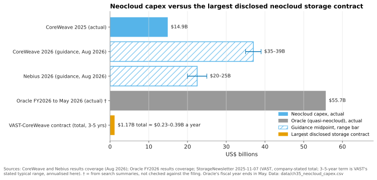

35. AI factories and neoclouds¶
Depth: L2 · Reading time: ~10 min · Last verified: 2026-11-01 Prerequisites: The GPU data path · Consumption models · Training storage · NVIDIA's ecosystem and certifications
TL;DR¶
- Neoclouds are GPU-specialist clouds that rent accelerator capacity to AI labs, enterprises and even hyperscalers. The leaders now operate at utility scale: CoreWeave ended 2025 with more than 850 MW of active power in 43 data centres1 and guides 2026 capex to US$35–39 billion2.
- They buy storage as a product to resell, not as infrastructure to consume. It must be multi-tenant, API-provisioned and metered in $/GB-month, and it must clear a margin over its own cost.
- The largest disclosed storage contract is about 1% a year of its customer's capex, and storage is about 4% of a GPU row's power, but it can idle 100% of the GPUs. Neoclouds therefore weight reliability, time-to-deploy and NVIDIA alignment above price.
- VAST is the incumbent of record. Its US$1.17 billion CoreWeave agreement is the largest disclosed deal3. WEKA and DDN hold multi-vendor positions, and the biggest neoclouds increasingly build their own object tier.
- Everpure is a challenger here. It has a CoreWeave equity stake, small FlashBlade//EXA neocloud wins and a fitting consumption model, but no large anchor account.
Why this matters for Everpure strategy¶
Neoclouds are the fastest-growing new class of storage buyer, and they buy differently from the enterprises that built Everpure's franchise. CoreWeave alone had a backlog of roughly US$104 billion in August 20262. The storage chosen there shapes reference designs, benchmarks and buyer expectations far beyond their own data centres. VAST's rise (Chapter 42) is in large part a neocloud story.
The strategic question is which neocloud business is worth winning. Mega-neocloud deals are huge, concentrated and increasingly contested by in-house builds. Tier-2, sovereign and inference neoclouds are smaller, more numerous and less locked up. Each needs a different product, pricing and financing posture.
Core concepts¶
Neoclouds, AI factories and the foundry analogy¶
An AI factory is NVIDIA's term for a data centre whose output is tokens: GPUs, networks, storage and software designed as one production line. A neocloud rents out such factories. It sells bare-metal or Kubernetes/Slurm GPU clusters by the hour or under multi-year take-or-pay contracts, to labs, start-ups, enterprises and capacity-short hyperscalers. Microsoft's contract with Nebius is worth about US$17.4 billion4.
The semiconductor bridge is the foundry model. Hyperscalers resemble IDMs: they design their own storage stacks (Chapter 36), much as an IDM runs its own process. Neoclouds resemble a young pure-play foundry: they buy tools and compete on capacity, time-to-volume and yield (here, utilisation). They adopt whatever tool the reference flow qualifies, and NVIDIA Cloud Partner (NCP) reference designs play the role of the PDK. A storage vendor outside the qualified flow rarely gets evaluated.
Scale has moved fast. CoreWeave reported a fleet of about 250,000 GPUs and 360 MW of active power at its 2025 IPO5. It ended 2025 with more than 850 MW active and about 3.1 GW contracted1. By June 2026 it had about 1.5 GW active and 3.7 GW contracted, and it targets more than 1.85 GW active by end-202662. Nebius raised its end-2026 contracted-power target to 5 GW in August 2026; contracted power means land and power commitments, not running capacity, and Nebius expects 0.8–1 GW connected by then7. Oracle acts as a quasi-neocloud: its remaining performance obligations passed US$455 billion in fiscal Q1 20268. Fluidstack is building data centres for Anthropic's US$50 billion programme9.
Anatomy of an AI-factory row¶

Figure 35.1 — In an AI-factory row, storage is a small slice of racks and power on its own network, yet every GPU depends on it for data, checkpoints and context.
A liquid-cooled GB200 NVL72 rack joins 72 GPUs by NVLink into one scale-up domain and draws roughly 120 kW (vendor ratings up to 130 kW)1011. Eight of them make a 576-GPU unit drawing about 1 MW. Three networks leave the row:
- Back-end compute fabric (InfiniBand or Spectrum-X Ethernet) carries GPU-to-GPU collectives between racks. Storage normally stays off it.
- Storage network (Ethernet with RoCE) carries training reads, checkpoints and KV-cache spill. It is often converged with the front-end on the same NICs or DPUs.
- Front-end network carries tenant access, APIs, dataset ingest and management.
How much storage does the row need? Reference designs disagree. Cisco's NCP high-performance storage design sizes 180 GB/s of read for 1,152 GPUs, about 0.16 GB/s per GPU [VERIFY: search-summary only]12. WEKA's NCP-certified designs cite roughly 1 GB/s per GPU13. For our 576 GPUs that is 90–576 GB/s, a sixfold spread. The gap is mostly checkpoint bursts and tolerated write stall (Chapter 31). NVIDIA's NCP requirements add an operational bar: end-to-end uptime above 99.5% per PB for the high-speed file system, an NFSv4 shared home-directory tier held to a higher (99.99%) availability target, and a readiness timeline in which data-movement systems must be in place about eight weeks before GPU handover14.
How a neocloud buys differently from an enterprise¶
1. Storage is resold, so it is priced per GB-month. CoreWeave lists Distributed File Storage at US$0.07/GB-month. Its AI Object Storage is US$0.06 hot, US$0.03 warm and US$0.015 cold, with no egress or request fees15. US$0.07/GB-month is US$840 per TB-year. Assume, for illustration only, an all-in cost of US$1,000 per usable TB over four years. At list price and 100% sold, revenue is US$3,360 against US$1,000 of cost, a 70% gross margin. At 50% sold the margin falls to about 40%, and at 30% sold it is roughly breakeven. The neocloud's storage P&L is a utilisation business. Hence the premium on thin provisioning, data reduction and capacity-on-demand pricing. An enterprise sees only the US$1,000.
2. Multi-tenancy is the product. An enterprise array serves one company with trusted administrators. A neocloud serves hundreds of tenants who must not see each other's data or noisy I/O. That means hard isolation (namespaces, VRF separation, per-tenant keys), QoS, quotas, metering and self-service APIs. Crusoe, for example, exposes VAST-backed shared disks through its API, CLI and Terraform16.
3. Reliability and time-to-deploy beat price. Storage is a rounding error in neocloud capex. The VAST–CoreWeave agreement is US$1.17 billion over what VAST describes as typical 3–5-year terms17, or about US$0.23–0.39 billion a year. Against CoreWeave's US$35–39 billion of 2026 capex that is roughly 0.6–1.1% (Figure 35.3). Yet a storage outage idles every GPU attached to it (Chapter 11 prices GPU idle time). Blocks & Files summarised the neocloud view: reliability beats storage price because GPU downtime costs far more18.
4. Power per rack is the binding constraint. Using the Figure 35.1 assumptions, three storage racks at about 15 kW draw 45 kW. That equals 45 ÷ 125 ≈ 0.36 of an NVL72 rack, about 26 GPUs' worth of power. Where contracted megawatts cap revenue, TB/W and TB per rack matter even when storage $/TB does not (Chapter 38).
5. NVIDIA alignment is the entry ticket. Neoclouds want storage certified at NVIDIA's NCP tier and present in NCP reference designs (Chapter 34). They also want it on NVIDIA's roadmap: CoreWeave, Crusoe, Lambda, Nebius, OCI and others are named early adopters of the BlueField-4 STX context-memory architecture19. And buyers rank neoclouds with SemiAnalysis's ClusterMAX ratings, whose ten criteria include storage20.
6. Software-defined is preferred. Large neoclouds want storage on the same qualified servers, spares and automation as their compute. WEKA, for example, runs natively on Nebius's servers21. Appliances win when they are the fastest route to a certified configuration.
7. Financing shapes the deal. Neoclouds fund GPUs with debt secured on customer contracts, plus customer prepayments and convertible bonds. Nebius expects more than US$9 billion of customer prepayments in 2026, covering roughly 50–60% of the capex on the related deals7. It also priced US$2.75 billion of convertible notes in September 2025, up to about US$3.16 billion if the purchasers' option was exercised in full22. Vendors are asked to match with consumption pricing or deferred payments, and they take counterparty risk.
| Criterion | Why it matters to a neocloud | Architectures that score well |
|---|---|---|
| Hard multi-tenancy and QoS | Hundreds of tenants share a cluster; a noisy or leaky neighbour is a lost customer | VAST (built-in tenancy); WEKA; FlashBlade//EXA since 2026 multi-tenancy/QoS release23 |
| API/Terraform provisioning and metering | Storage is sold self-service and billed per GB-month | In-house object stores; VAST; WEKA |
| Throughput per rack and per watt | Power caps revenue; checkpoint bursts set sizing | Disaggregated flash (VAST, FlashBlade//EXA); DDN appliances for raw GB/s |
| NVIDIA NCP certification and STX roadmap | Entry ticket to reference designs and NVIDIA-led deals | VAST, WEKA, DDN, Everpure, IBM, NetApp all pursue it19 |
| Runs on the neocloud's own hardware | One supply chain, spares pool and automation stack | Software-defined (WEKA, VAST software, Lightbits, in-house) |
| Time-to-deploy at scale | Storage readiness milestones run weeks ahead of GPU handover; revenue starts at handover | Vendors with pre-validated racks and field teams at scale |
| Consumption pricing and financing | Matches debt- and prepayment-funded capex | Subscription models (Evergreen//One, VAST/WEKA licences) |
| Hybrid tiering to cheap capacity | Margin on cold data, free-egress positioning | Object-native designs; cloud capacity partners (Backblaze) |
Table 35.1 — Neocloud buying criteria: price per TB matters less than tenancy, power, NVIDIA alignment and speed, which favours software-defined, disaggregated designs.
Who supplies whom¶
flowchart LR
CW["CoreWeave"]
NB["Nebius"]
LM["Lambda"]
CR["Crusoe"]
NS["Nscale"]
FS["Fluidstack"]
OCI["Oracle OCI"]
VAST["VAST Data"]
WEKA["WEKA"]
DDN["DDN"]
EP["Everpure"]
BB["Backblaze"]
LB["Lightbits"]
INH["In-house storage"]
CW -->|"$1.17B primary platform"| VAST
CW -->|"dedicated option"| WEKA
CW -->|"dedicated option"| DDN
CW -->|"equity stake 2024, dedicated option"| EP
CW -->|"$335M capacity deal"| BB
CW -->|"AI Object Storage + LOTA"| INH
NB -->|"premium tier"| WEKA
NB -->|"integrated"| VAST
NB -->|"integrated"| DDN
NB -->|"shared filesystem"| INH
LM -->|"partner"| VAST
CR -->|"shared disks"| VAST
CR -->|"block storage"| LB
OCI -->|"AMG launch partner"| WEKA
OCI -->|"Infinia on OCI"| DDN
NS -.->|"reported partner, unverified"| VAST
FS -.->|"reported 2025, scope unclear"| VASTFigure 35.2 — VAST touches every large neocloud, but the biggest buyers run several vendors in parallel plus their own object tier; dashed edges are reported but not confirmed by both parties.
Edge sources: CoreWeave (its storage page also lists IBM Storage Scale)242532627; Nebius21282930; Lambda and Crusoe311632; OCI3334. Nscale appears only in a Next Platform list of VAST partners35; Fluidstack's 2025 VAST deal may not cover the Anthropic sites36. Together AI has disclosed no storage vendor [VERIFY: Together AI storage vendor].
The build-it-yourself threat¶
The largest neoclouds are copying the hyperscaler playbook. CoreWeave's AI Object Storage runs LOTA (Local Object Transport Accelerator), a cache on every GPU node's local NVMe, and claims up to 7 GB/s per GPU25. Nebius's own shared filesystem now has validated cluster sizes of 100 PB [VERIFY: search-summary only]30. The emerging pattern is in-house object for bulk data, third-party file for the hottest tier and a cheap partner for capacity, such as CoreWeave's five-year, multi-exabyte deal with Backblaze, which supplies HDD-based tiers behind CoreWeave AI Object Storage (about US$335 million over the initial orders)27. Vendors keep the performance tier only while measurably better than a commodity-flash build, the dynamic that led Everpure to license DirectFlash to Meta rather than sell arrays37 (Chapter 29).

Figure 35.3 — The largest disclosed neocloud storage deal is about 1% a year of its customer's capex, which is why neoclouds buy storage on risk and speed, not price.
Data: data/ch35_neocloud_capex.csv
How Everpure approaches it vs. competitors¶
| Vendor | Neocloud position (public) | Fit to neocloud criteria | Weak spot |
|---|---|---|---|
| VAST Data | Primary platform at CoreWeave (US$1.17B); Lambda, Crusoe, Nebius, many tier-2s331 | Native multi-tenancy, software on partner hardware, NVIDIA closeness | Concentration in one customer; neoclouds building their own object tier |
| WEKA | Nebius premium tier; CoreWeave option; OCI launch partner2133 | Software-defined, runs on neocloud servers, strong KV-cache story | Smaller scale and balance sheet; client software on GPU nodes |
| DDN | CoreWeave option, Nebius, OCI; xAI heritage2834 | Raw throughput, HPC credibility, NVIDIA reference designs | Appliance-centric; Lustre operations burden for multi-tenant service |
| Everpure (FlashBlade//EXA) | CoreWeave equity stake and dedicated option; STN, beyond.pl wins2638 | Standard pNFS client, DirectFlash density in the metadata tier, Evergreen//One for EXA38, NCP reference architecture39 | Multi-tenancy only arrived in 202623; EXA data nodes are still third-party NVMe servers, so DFM power density does not yet reach the data tier (Chapter 37); no mega-neocloud anchor |
| In-house / open | CoreWeave AI Object Storage, Nebius filesystem, Lightbits at Crusoe2532 | Lowest cost, full control, same hardware | Engineering burden; harder for hottest file tier |
Table 35.2 — VAST holds the neocloud anchor accounts, WEKA and DDN hold multi-vendor seats, and Everpure enters as a challenger whose levers are financing and, once DFM data nodes ship, power density.
Steelman VAST. VAST got there first with a design that matches neocloud economics. Its stateless compute and shared QLC let a neocloud scale performance and capacity separately. It had multi-tenancy early, sells software on commodity servers, and its CoreWeave reference makes it the safe choice for smaller neoclouds, none of whom wants to experiment during a GPU ramp.
Options a strategy team might evaluate, based on public information:
- Software-first EXA. License EXA software on neocloud-qualified servers, as with hyperscalers, trading gross dollars for presence.
- Finance the ramp. Evergreen//One already covers EXA38. Terms tied to tenant sell-through would address criteria 1 and 7, at the cost of credit exposure.
- Lead on power. Publish TB/W and TB/rack against NCP sizings.
- Target tier-2, sovereign and inference neoclouds. Demand is shifting towards enterprise inference18, where KV-cache tiers (PureKVA, STX) are new and contested (Chapter 32).
- Use the CoreWeave relationship. Aim for a tier or region, not head-on displacement.
History and trajectory¶
- 2023–2024: H100 scarcity creates the boom. VAST becomes CoreWeave's and then Lambda's storage platform (2023)40. Crusoe launches VAST-backed shared disks in September 202416. Pure Storage invests in CoreWeave in November 202426.
- 2025: CoreWeave IPOs (March) and launches AI Object Storage with LOTA25. Nebius adds DDN (May) and WEKA (June)2821. In September Nebius signs the Microsoft contract4. In October Microsoft contracts Nscale for about 200,000 GB300 GPUs (company-stated; no value disclosed)41. In November VAST expands its CoreWeave relationship into the US$1.17 billion agreement3 and Anthropic picks Fluidstack9.
- 2026: NVIDIA's STX names neocloud early adopters (March)19. Everpure reports EXA neocloud wins and extends Evergreen//One to EXA (March)38, then adds EXA multi-tenancy (June)23. CoreWeave signs a US$335M capacity deal with Backblaze (June)27 and raises capex guidance to US$35–39B (August)2.
- Where it goes: inference over training, KV-cache tiers, more in-house object storage at the top, and credit stress among weaker neoclouds if GPU rental prices fall faster than debt amortises.
Numbers that matter¶
| Metric | Value | Context | Source / date |
|---|---|---|---|
| CoreWeave active / contracted power | >850 MW / ~3.1 GW; ~1.5 GW / ~3.7 GW | 43 data centres at end-2025; June 2026 | 10-K FY20251; Q2 2026 call6 |
| CoreWeave 2026 capex guidance | US$35–39B | Raised from US$31–35B in August 2026 | Q2 2026 coverage2 |
| CoreWeave revenue backlog | ~US$104B | Before US$25B+ of new commitments in early Q3 | Q2 2026 coverage2 |
| VAST–CoreWeave agreement | US$1.17B (company-stated) | Typically 3–5 years, ≈ 0.6–1.1% of 2026 capex a year | Reuters, 2025-11-063 |
| CoreWeave file / hot object list price | US$0.07 / US$0.06 per GB-month | No egress or request fees | CoreWeave docs15 |
| NVL72 rack power | ~120–130 kW | Liquid-cooled; drives row power math | SemiAnalysis; Gigabyte1011 |
| Storage share of row power | ~4% | Worked example, Figure 35.1 assumptions | Worked example |
| NCP readiness milestone | ~8 weeks before GPU handover | Data-movement systems; high-speed FS uptime >99.5% per PB | NVIDIA NCP requirements14 |
| Nebius–Microsoft contract | ~US$17.4B (up to ~US$19.4B) | Hyperscaler buying neocloud capacity | Nebius 6-K, 2025-114 |
Conversation playbook¶
Questions for a PM
- "What does a neocloud's storage P&L look like on EXA versus VAST at 50% sell-through?" Strong: $/TB-month cost against tenant list price, including data reduction.
- "Which tenancy features block us in neocloud bake-offs today?" Strong: specific gaps (keys, VRF, QoS floors, metering, Terraform) with ship dates.
- "How do we get into NCP reference designs for GB300 and Vera Rubin, not just certification?" Strong: separates certification from being the named design.
Questions for an engineer
- "Size storage for 1,152 GB300 GPUs at 0.16 versus 1 GB/s per GPU. What changes in racks, kW and switch ports?" Strong: node counts, kW and ports for both, and which tenants need.
- "How do we stop one tenant's checkpoint burst from starving another's training reads?" Strong: QoS at metadata and data layers, with measured tail latency.
- "Could EXA data nodes run on a neocloud's own server SKU?" Strong: qualification steps, firmware dependencies, support model.
Don't say this:
- "Neoclouds are price-driven buyers." Not for storage: the largest disclosed deal is about 1% a year of capex, so risk, speed and power dominate.
- "VAST owns all neoclouds." CoreWeave and Nebius run several vendors plus in-house storage.
- "NCP certification wins the deal." It qualifies you. Reference-design placement and the anchor account win it.
- "Multi-tenancy is a feature." For a neocloud it is the product.
- "CoreWeave is a hyperscaler." It buys and finances third-party storage like a foundry buys tools.
Going deeper (optional, L3 pointers)¶
- NVIDIA's "Requirements for AI Clouds" storage section; the detailed NCP storage design is partner-portal only14.
- Vendor NCP reference architectures from Cisco, IBM, DDN, WEKA and Pure Storage (FlashBlade//S500)1239.
- CoreWeave's FY2025 10-K risk factors on customer concentration and debt1.
- SemiAnalysis ClusterMAX 2.0 methodology for how buyers score neocloud storage20.
Key terms¶
- Neocloud — GPU-specialist cloud provider renting AI clusters.
- AI factory — data centre designed end to end to produce AI tokens.
- NCP (NVIDIA Cloud Partner) — NVIDIA's programme and reference designs for GPU clouds.
- LOTA — CoreWeave's node-local cache for its AI Object Storage.
- Sell-through — share of installed storage capacity actually billed to tenants.
- ClusterMAX — SemiAnalysis's rating system for GPU clouds.
- See the glossary for the rest.
Sources¶
-
SEC, "CoreWeave, Inc. Form 10-K for fiscal year ended December 31, 2025," 2026. https://www.sec.gov/Archives/edgar/data/1769628/000176962826000104/crwv-20251231.htm (retrieved 2026-11-01). ↩↩↩↩
-
Channelchek, "CoreWeave Q2 2026 Earnings: CRWV Stock Jumps 14% on Record Revenue and Raised AI Capex Guidance," 2026-08. https://dashboard.channelchek.com/?p=104902 ; corroborated by TrendSpider, "CoreWeave Stock Jumps After Q2 Earnings Beat," 2026-08. https://trendspider.com/blog/coreweave-stock-q2-earnings-guidance-2026/ (both retrieved 2026-11-01). ↩↩↩↩↩↩
-
Reuters (via AOL), "Exclusive: Nvidia-backed Vast Data inks $1.17 billion AI deal with CoreWeave," 2025-11-06. https://www.aol.com/articles/exclusive-nvidia-backed-vast-data-120456403.html (retrieved 2026-11-01). ↩↩↩↩↩
-
SEC, "Nebius Group N.V. Form 6-K, Exhibit 99.2 (Q3 2025 results)," 2025-11. https://www.sec.gov/Archives/edgar/data/1513845/000110465925109806/tm2530882d1_ex99-2.htm (retrieved 2026-11-01). ↩↩↩
-
The Next Platform, "CoreWeave's 250,000-Strong GPU Fleet Undercuts The Big Clouds," 2025-03-06. https://www.nextplatform.com/ai/2025/03/06/coreweaves-250000-strong-gpu-fleet-undercuts-the-big-clouds/1656232 (retrieved 2026-11-01). ↩
-
MarketBeat, "CoreWeave Q2 Earnings Call Highlights," 2026-08-11. https://www.marketbeat.com/instant-alerts/coreweave-q2-earnings-call-highlights-2026-08-11/ (retrieved 2026-11-01). ↩↩
-
MarketBeat, "Nebius Group Q2 Earnings Call Highlights," 2026-08-12. https://www.marketbeat.com/instant-alerts/nebius-group-q2-earnings-call-highlights-2026-08-12/ ; Rivkin, "Nebius Group (NASDAQ:NBIS)" Q2 2026 results summary, 2026-08. https://rivkin.com.au/?p=37370 ; The Energy Mag, "Nebius Group reports 454% revenue growth in Q2 2026, raises power guidance to 5 GW," 2026-08. https://theenergymag.com/news/market-news/nebius-group-reports-454-revenue-growth-in-q2-2026-raises-power-guidance-to-5-gw (both retrieved 2026-11-01). ↩↩
-
DatacenterDynamics, "Oracle has $455bn in remaining performance obligations at end of Q1 2026," 2025-09. https://www.datacenterdynamics.com/en/news/oracle-has-455bn-in-remaining-performance-obligations-at-end-of-q1-2026/ (retrieved 2026-11-01). ↩
-
TechCrunch, "Anthropic announces $50 billion data center plan," 2025-11-12. https://www.techcrunch.com/2025/11/12/anthropic-announces-50-billion-data-center-plan/ (retrieved 2026-11-01). ↩↩
-
SemiAnalysis, "GB200 Hardware Architecture and Component Supply Chain & BOM," 2024-07. https://newsletter.semianalysis.com/p/gb200-hardware-architecture-and-component (retrieved 2026-11-01). ↩↩
-
Gigabyte, "NVIDIA GB200 NVL72 (GIGAPOD)," n.d. https://www.gigabyte.com/Enterprise/GIGAPOD-Pod-Scale/AI-DLC-POD_NVIDIA-GB200-NVL72 (retrieved 2026-11-01). ↩↩
-
Cisco, "High-Performance Storage Reference Architecture for NVIDIA Cloud Partners, GB200/GB300 NVL72" (EBox, per file name), n.d. https://www.cisco.com/c/dam/en/us/solutions/collateral/artificial-intelligence/cisco-ebox-hcp-nvl72-hps-ra.pdf (retrieved 2026-11-01). ↩↩
-
WEKA, "How Certified Storage is Reshaping the AI Factory Floor," n.d. https://weka.io/article/how-certified-storage-is-reshaping-the-ai-factory-floor (retrieved 2026-11-01). ↩
-
NVIDIA Docs, "NVIDIA Requirements for AI Clouds – Storage requirements," n.d. https://docs.nvidia.com/dsx/ncp/nvidia-requirements-for-ai-clouds/storage-requirements ; NVIDIA, "NVIDIA Requirements for AI Clouds" v2.4, 2026-09-01. https://docs.nvidia.com/dsx/ncp/nvidia-requirements-for-ai-clouds/v2.4 (both retrieved 2026-11-01; read via search summary). ↩↩↩
-
CoreWeave Docs, "Storage Pricing," n.d. https://docs.coreweave.com/docs/pricing/pricing-storage (retrieved 2026-11-01). ↩↩
-
Crusoe, "Crusoe announces collaboration with VAST Data to deliver high-performance, scalable data platform on Crusoe Cloud," 2024-09-26. https://www.crusoe.ai/resources/newsroom/crusoe-vast-data-to-deliver-high-performance-data (retrieved 2026-11-01). ↩↩↩
-
StorageNewsletter, "Vast Data Secures Commercial Partnership Deal with CoreWeave for $1.17 Billion to Power the Next Generation of AI," 2025-11-07. https://www.storagenewsletter.com/2025/11/07/vast-data-secures-commercial-partnership-deal-with-coreweave-for-1-17-billion-to-power-the-next-generation-of-ai/ (retrieved 2026-11-01). ↩
-
Blocks & Files, "VAST Data and the evolving neoclouds," 2026-06-16. https://www.blocksandfiles.com/ai-ml/2026/06/16/vast-data-and-the-evolving-neoclouds/5256380 (retrieved 2026-11-01). ↩↩
-
StorageNewsletter, "Nvidia GTC 2026: Nvidia Launches BlueField-4 STX Storage Architecture With Broad Industry Adoption," 2026-03-17. https://www.storagenewsletter.com/2026/03/17/nvidia-gtc-2026-nvidia-launches-bluefield-4-stx-storage-architecture-with-broad-industry-adoption/ (retrieved 2026-11-01). ↩↩↩
-
SemiAnalysis, "ClusterMAX 2.0," 2025 (evaluation conducted August–September 2025). https://clustermax.semianalysis.com/v2 (retrieved 2026-11-01). ↩↩
-
Blocks & Files, "Nebius taps WEKA for top layer of storage in GPU farms," 2025-06-10. https://www.blocksandfiles.com/ai-ml/2025/06/10/nebius-taps-weka-for-top-layer-of-storage-in-gpu-farms/1594977 (retrieved 2026-11-01). ↩↩↩↩
-
Nebius, "Nebius Group announces pricing of upsized private offering of $2.75 billion of convertible senior notes," 2025-09-10. https://nebius.com/newsroom/nebius-group-announces-pricing-of-upsized-private-offering-of-2-75-billion-of-convertible-senior-notes (retrieved 2026-11-01); SEC, "Nebius Group N.V. Form 424B5 (convertible senior notes due 2030 and 2032)," 2025-09. https://www.sec.gov/Archives/edgar/data/1513845/000110465925088885/tm2525503-3_424b5.htm (retrieved 2026-11-01). ↩
-
Coolspirit, "Pure Accelerate 2026: What the Latest Announcements Mean for Enterprise Storage," 2026-06. https://www.coolspirit.co.uk/blogs/pure-accelerate-2026-what-the-latest-announcements-mean-for-enterprise-storage (retrieved 2026-11-01). ↩↩↩
-
CoreWeave, "Storage" product page, n.d. https://coreweave.com/products/storage (retrieved 2026-11-01). ↩
-
CoreWeave, "CoreWeave Unveils AI Object Storage, Redefining How AI Workloads Access and Scale Data," 2025. https://coreweave.com/news/coreweave-unveils-ai-object-storage-redefining-how-ai-workloads-access-and-scale-data (retrieved 2026-11-01). ↩↩↩↩
-
Pure Storage, "Pure Storage Announces Strategic Investment and Technology Partnership with CoreWeave," 2024-11. https://www.purestorage.com/company/newsroom/press-releases/pure-announces-strategic-investment-and-tech-partnership-with-coreweave.html (retrieved 2026-11-01). ↩↩↩
-
Blocks & Files, "Backblaze gets $335 million CoreWeave bonanza," 2026-06-23. https://blocksandfiles.com/public-cloud/2026/06/23/backblaze-gets-335-million-coreweave-bonanza/5260288 (retrieved 2026-11-01). ↩↩↩
-
Blocks & Files, "DDN storing data for Nebius AI's GPU server farm," 2025-05-02. https://www.blocksandfiles.com/ai-ml/2025/05/02/ddn-storing-data-for-nebius-ais-gpu-server-farm/1600313 (retrieved 2026-11-01). ↩↩↩
-
Nebius, "VAST Data" partner catalogue entry, n.d. https://nebius.com/partner-catalog/vast (retrieved 2026-11-01). ↩
-
Nebius, "Storage for AI workloads," n.d. https://nebius.com/storage (retrieved 2026-11-01). ↩↩
-
Blocks & Files, "The nature of the VAST Data beast," 2025-12-11. https://blocksandfiles.com/2025/12/11/the-nature-of-the-vast-data-beast (retrieved 2026-11-01). ↩↩
-
Crusoe, "How We Built It: Block Storage for AI/ML Workloads, Powered by Lightbits," 2024. https://crusoe.ai/blog/how-we-built-it-block-storage-for-ai-ml-workloads-powered-by-lightbits/ (retrieved 2026-11-01). ↩↩
-
Oracle Blogs, "Scaling long-context inference on OCI with WEKA's Augmented Memory Grid," 2025-11. https://blogs.oracle.com/ai-and-datascience/scaling-long-context-inference-on-oci-with-wekas-augmented-memory-grid (retrieved 2026-11-01). ↩↩
-
Blocks & Files, "DDN goes hard CORE," 2025-11-18. https://www.blocksandfiles.com/ai-ml/2025/11/18/ddn-goes-hard-core/1718766 (retrieved 2026-11-01). ↩↩
-
The Next Platform, "VAST Data's $1.17 Billion Deal With CoreWeave Is A Leading Indicator," 2025-11-08. https://www.nextplatform.com/ai/2025/11/08/vast-datas-117-billion-deal-with-coreweave-is-a-leading-indicator/1696240 (retrieved 2026-11-01). ↩
-
Baxtel, "Fluidstack chooses VAST Data platform for AI workloads," 2025-04. https://baxtel.com/news/fluidstack-chooses-vast-data-platform-for-ai-workloads (retrieved 2026-11-01). ↩
-
SiliconANGLE, "Shares of Pure Storage jump on impressive earnings beat and strong guidance," 2024-12-03. https://siliconangle.com/2024/12/03/shares-pure-storage-jump-impressive-earnings-beat-strong-guidance/ (retrieved 2026-11-01). ↩
-
Blocks & Files, "Everpure dives deeper into AI," 2026-03-16. https://www.blocksandfiles.com/ai-ml/2026/03/16/everpure-dives-deeper-into-ai/5209351 (retrieved 2026-11-01). ↩↩↩↩
-
Pure Storage, "High-Performance Storage for NVIDIA Cloud Partners (Reference Architecture)," n.d. https://www.purestorage.com/content/dam/pdf/en/reference-architectures/ra-high-performance-storage-for-nvidia-cloud-partners.pdf (retrieved 2026-11-01). ↩↩
-
Blocks & Files, "VAST Data bags second GPU cloud customer, Lambda Labs," 2023-10-23. https://www.blocksandfiles.com/ai-ml/2023/10/23/vast-data-bags-second-gpu-cloud-customer-lambda-labs/1595654 (retrieved 2026-11-01). ↩
-
Nscale, "Nscale Contracts Approximately 200,000 NVIDIA GB300 GPUs with Microsoft to Deliver NVIDIA AI Infrastructure Across Europe and the U.S.," 2025-10-15. https://nscale.com/press-releases/nscale-microsoft-2025 ; TechCrunch, "Nscale inks massive AI infrastructure deal with Microsoft," 2025-10-15. https://techcrunch.com/2025/10/15/nscale-inks-massive-ai-infrastructure-deal-with-microsoft/ (both retrieved 2026-11-01). ↩